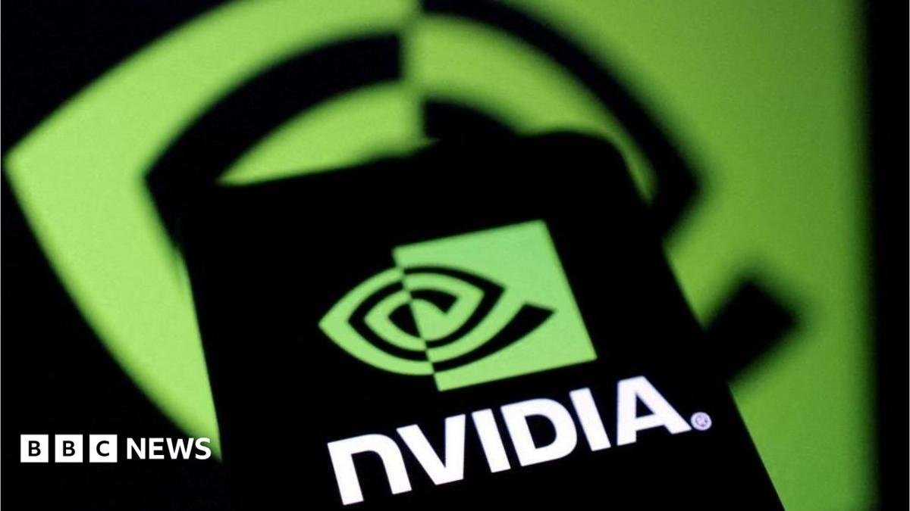

新闻 · 2026-11-20 12:00
California targets Nvidia in China AI chip probe
加州总检察长罗布·邦塔对AI芯片公司英伟达发出调查传票，调查其是否通过前CEO黄仁勋的个人行为导致中国获取先进芯片或机密信息，涉嫌违反加州证券法。邦塔强调公司不得误导投资者。事件源于黄仁勋与疑似中国间谍的Megaspeed高管爱丽丝·黄的婚外情，部分国会议员呼吁商务部调查Megaspeed是否将英伟达芯片转售至中国。

来源与核验
单一信源报道，未交叉核实